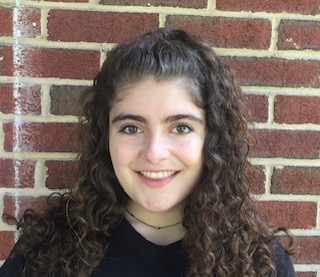

Maria Trovato

Journalist and Researcher
Maria is a journalist and researcher who reports on social issues. Currently, she is a student at the University of Maryland.
Experience
Housing and Development Reporter
Street Sense Media
June 2020-August 2020
- Pitched, reported and wrote articles on deadline for this publication about homelessness.
- Interviewed sources, covered meetings and protests, took photographs, and edited and published articles online.
News Intern
The Crime Report
June 2019 - August 2020
- Wrote daily articles about issues in the criminal legal system for the online publication.
- Pitched stories, copy edited the website, covered events such as summits and speeches, interviewed sources, and wrote an investigative piece on the criminalization of sex work and its harmful effects.
Education Committee Chair
Education Committee Chair
2018-Current
- Organizes events and protests, provides educational materials about the harms of prison and policing systems.
- Raise money for social justice and prison abolitionist causes, work with various local grassroots organizations.
- Lead discussions and information sessions for the organization.
Researcher, Upcoming Book on Freddie Gray's Death
Mary Ann Whelan
August 2018 – December 2019
- Assisted the author with research about Freddie Gray's death and related incidents of police brutality.
- Conducted Freedom of Information Act requests, identified sources, obtained court documents, found articles from archives, and conducted comprehensive research.
Researcher, "Rattling the Bars"
The Real News Network
June 2018 - August 2018
- Conducted in-depth research into criminal and social justice topics for this audio-visual news show.
- Located sources, fielded inquiries, compiled research briefs, assisted with the production of content.
Community Outreach Chair
Maryland Public Interest Research Group
January 2018 – June 2018
- Represented the Domestic Abuse and Homelessness Campaign for this University of Maryland chapter.
- Organized educational and fundraising events and projects in support of local homelessness and domestic abuse organizations.
Staff Writer
Writing Wrongs Community Journalism Project
September 2018
- Interviewed and spent time with survivors of domestic abuse.
- Wrote articles about survivors’ experiences for a published student journalism book.
Education
- Bachelor of Arts, Multiplatform Journalism, University of Maryland College Park, Expected in 2021
- Bachelor of Science, Government and Politics, University of Maryland College Park, Expected in 2021
Skills
- Microsoft Office 360 (Word, PowerPoint, Excel)
- Adobe Creative Suite (Photoshop, Audition, Premiere)
- Photography, video, audio skills
- Database Research
I built this myself!